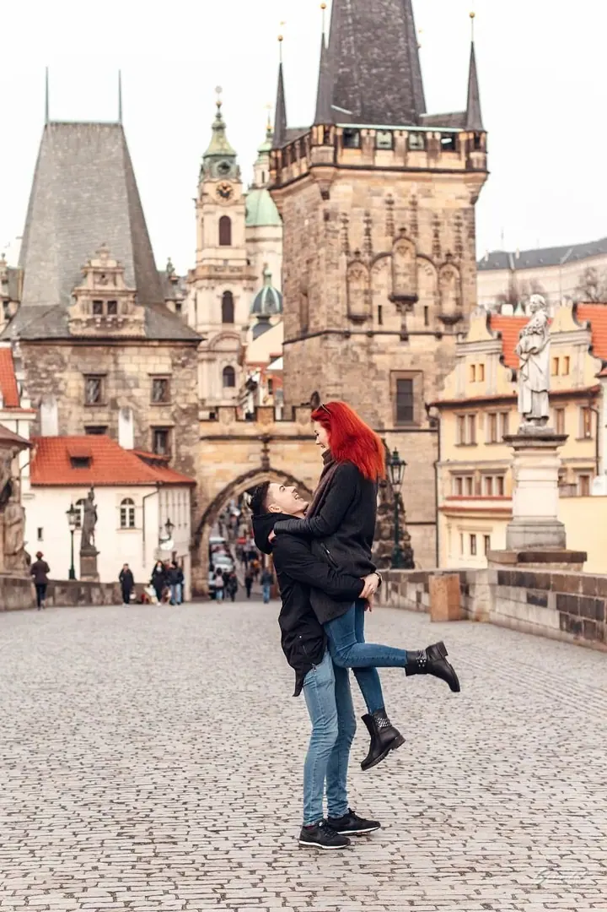
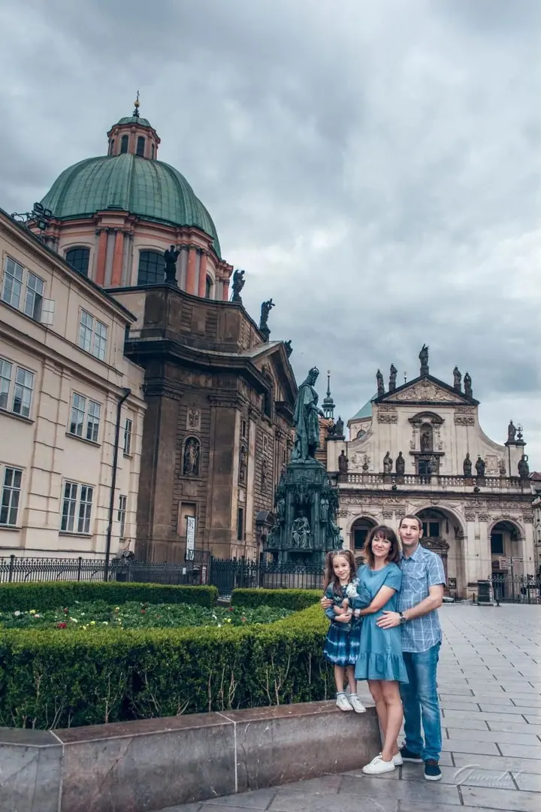
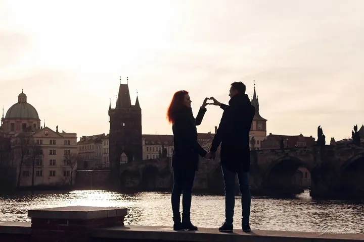
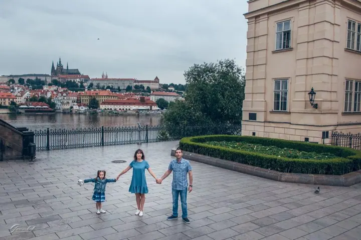

jedna
Focení párů a cestovatelů v Praze
Po výletu obvykle zůstanou jen fotky krásných výhledů. Já vás do nich vrátím, ať jste sami, ve dvou, s rodinou nebo s přáteli.

Fotografka párů, rodin a cestovatelů v Praze · Praha, Karlovy Vary, Mariánské Lázně

Jmenuji se Alena Gurenchuk a od roku 2014 fotím v Praze, ve městě, do kterého jsem zamilovaná. Fotím páry, rodiny i cestovatele, kteří si chtějí z Prahy odvézt víc než jen fotky výhledů.
Více o mně
Co fotím
jedna
Po výletu obvykle zůstanou jen fotky krásných výhledů. Já vás do nich vrátím, ať jste sami, ve dvou, s rodinou nebo s přáteli.
dvě
Uvolněná procházka Prahou s dětmi, při které vznikají přirozené fotky celé rodiny. Před focením dostanete checklist, jak se připravit.
Nenápadně a do detailu naplánované focení žádosti o ruku v Praze. Předem s vámi projdu místo a zachytím chvíli, kdy zazní „ano“.
Pro páry, které sní o malé a intimní svatbě v Praze. Jen vy dva, romanticky a v klidu.
Aspoň na chvíli se staňte součástí Prahy

Za objektivem
Jsem profesionální fotografka a v Praze fotím od roku 2014. Do tohoto pohádkového města jsem se zamilovala stejně jako do fotografie a ráda ho ukazuji lidem, kteří sem přijedou nebo tu žijí.
Nechci fotit jen hezké obrázky. Snažím se zachytit emoce, příběhy a vzpomínky, díky kterým je každý člověk a každá rodina jedinečná. Věřím, že každý má co říct, a já se snažím přes objektiv ukázat, jací opravdu jste.
Fotím žádosti o ruku, samostatná focení pro ženy i muže, páry, rodiny a skupiny. Mimo Prahu vyrážím třeba do Průhonic, na zámek Žleby, do Karlových Varů nebo Mariánských Lázní. Na focení stačí přijít, a já vás provedu.
Alena
Zvolíte typ focení a balíček, který vám sedí. Když si nejste jistí, ráda poradím.
Vyplníte formulář a do 24 hodin vám termín potvrdím. Po zaplacení zálohy vám pošlu checklist, jak se na focení připravit.
Stačí přijít, o zbytek se postarám já. Během focení vás povedu, takže nemusíte umět pózovat.
Náhledovou galerii dostanete do 72 hodin. Upravené fotky pošlu za 10 až 15 pracovních dnů od vašeho výběru.
Portfolio
Otázky
Brzy ráno nebo večer při západu slunce. Ráno je krásné světlo a v centru málo lidí, jen je potřeba přivstat si. Večer je světlo měkčí a vydrží déle a zahrady jsou otevřené, lidí je ale víc.
Nebojte se, mám pro vás průhledný deštník a i s ním vzniknou krásné fotky. Velká výhoda jsou prázdné ulice, i v centru. Když budu mít volný termín, můžeme focení také přesunout.
Ano. Ze všech snímků vyberu ty nejlepší a pošlu vám odkaz, kde si zvolíte, které upravím. Nebo vyberu fotky podle svého a zbytek vám pošlu, abyste si mohli doobjednat další.
Jen s vaším souhlasem. Než fotky zveřejním na webu nebo na sociálních sítích, vždycky se vás zeptám.